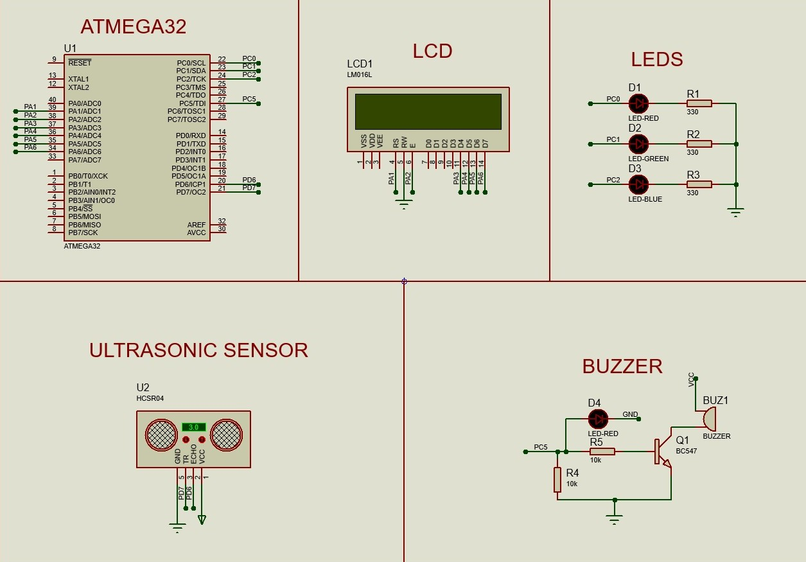

🚗 Smart Parking Assistance System
Overview
The Smart Parking Assistance System is an embedded automotive solution designed to assist drivers during parking operations. The system uses an ultrasonic sensor to measure the distance between the vehicle and nearby obstacles in real time. Distance information is displayed on an LCD screen, while LEDs and a buzzer provide visual and audible warnings as obstacles become closer. The system enhances parking safety and helps reduce collision risks in tight parking spaces.
Objectives
- Measure obstacle distance in real time.
- Assist drivers during parking maneuvers.
- Provide visual warning indicators.
- Generate audible alerts using a buzzer.
- Display distance values on LCD.
- Improve parking safety and convenience.
Key Features
- Ultrasonic Distance Measurement.
- Real-Time LCD Monitoring.
- LED-Based Warning System.
- Buzzer Alert Notifications.
- Obstacle Detection.
- ICU-Based Pulse Measurement.
- Automotive Parking Assistance.
- Embedded Real-Time Processing.
System Architecture
- ATmega32 Microcontroller.
- HC-SR04 Ultrasonic Sensor.
- 16x2 LCD Display.
- LED Indicators.
- Buzzer Module.
- ICU Driver.
- GPIO Driver.
- Timer Driver.
Technologies Used
- ATmega32
- Embedded C
- HC-SR04 Ultrasonic Sensor
- LCD Driver
- GPIO Driver
- Timer Driver
- ICU Module
- Automotive Embedded Systems
Challenges & Solutions
-
Challenge:
Accurate distance measurement.
Solution: Utilized ICU and timer peripherals to calculate ultrasonic echo pulse duration. -
Challenge:
Providing clear driver feedback.
Solution: Combined LCD display, LEDs, and buzzer alerts for multiple warning levels. -
Challenge:
Real-time obstacle detection.
Solution: Implemented continuous distance monitoring and instant alert generation.
Results
- Successful real-time obstacle detection.
- Accurate ultrasonic distance measurement.
- Reliable LCD monitoring interface.
- Effective visual and audible alerts.
- Improved parking safety assistance.
- Stable embedded system performance.
Future Improvements
- Wireless Mobile Monitoring.
- Multi-Sensor Coverage.
- Rear Camera Integration.
- Automatic Parking Assistance.
- Bluetooth Connectivity.
- Smart Vehicle Integration.
Gallery

Complete Smart Parking Assistance System Architecture